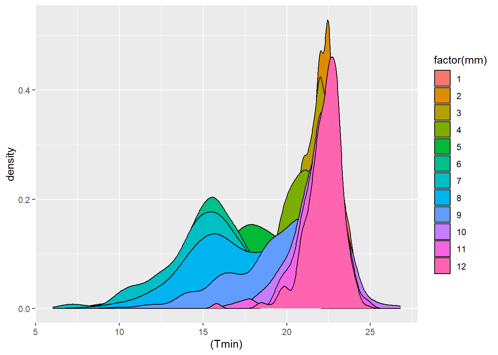
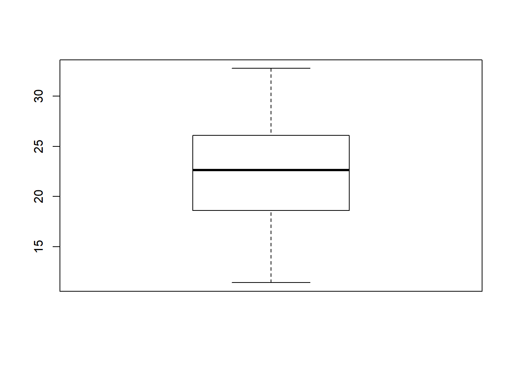
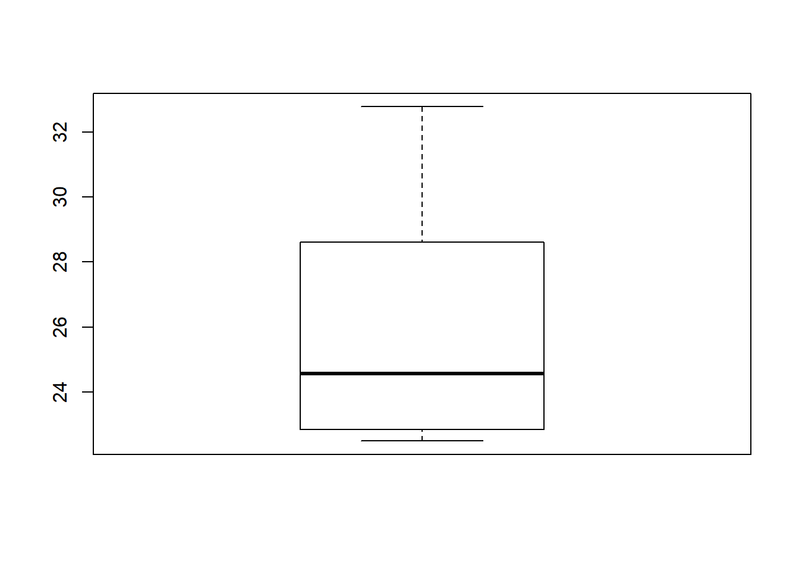

7 Testes Estatísticos
O R inclui em sua gama de utilidades, uma poderosa ferramenta da estatástica contemporânea: os testes estatísticos. Dentre esses, podemos destacar os testes de media, amplamente usados em várias áreas do conhecimento.
7.1 Teste t de Student
O teste t é bastante usado em várias situações do cotidiano quando se deseja fazer comparações entre uma ou mais médias, sejam elas dependentes ou não. Abaixo estão exemplos de vários modos de realizarmos o teste t.
Dados referentes a temperatura média do ar em duas condições: dentro de uma casa de vegetação e no campo.
pira_tem <- read.csv2 ("https://www.dropbox.com/s/zvp5iftcpb6bdpe/pira_tem.csv?dl=1",
dec=".")
str(pira_tem)## 'data.frame': 768 obs. of 5 variables:
## $ hora : Factor w/ 96 levels "0:00","0:15",..: 1 2 3 4 5 6 7 8 49 50 ...
## $ periodo: Factor w/ 4 levels "equi_out","equi_prim",..: 4 4 4 4 4 4 4 4 4 4 ...
## $ local : Factor w/ 2 levels "campo","estufa": 2 2 2 2 2 2 2 2 2 2 ...
## $ temp : num 23.1 22.9 22.7 22.6 22.5 ...
## $ X : logi NA NA NA NA NA NA ...Apresentação dos dados em forma de gráfico
library(ggplot2)
ggplot(data= pira_tem, aes (x = hora, y = temp, colour =periodo)) +
geom_point(size=2,shape=19) +
geom_line() +
facet_grid(.~local) +
xlab("Horas") +
ylab("Temperatura ºC") +
ggtitle("Variação da temperatura mediana\n nas quatro efemêrides") +
theme(plot.title=element_text(face="bold", size=12, hjust = 0.5)) +
theme_bw()## geom_path: Each group consists of only one observation. Do you need to adjust
## the group aesthetic?
## geom_path: Each group consists of only one observation. Do you need to adjust
## the group aesthetic?
t.test()
Realiza o teste t-Student para uma ou duas amostras.
sintaxe:
t.test(amostra1, amostra2, opções)
Parâmetros
amostra1: Vetor contendo a amostra da qual se quer testar a média populacional, ou comparar a média populacional com a média populacional da amostra 2.
amostra2: Vetor contendo a amostra 2 para comparação da média populacional com a média populacional da amostra 1.
Opções
alternative: string indicando a hipótese alternativa desejada. Valores possíveis: “two-sided”, “less” ou “greater”.
mu: valor indicando o verdadeiro valor da média populacional para o caso de uma amostra, ou a diferença entre as mêdias para o caso de duas amostras.
paired: - TRUE - realiza o teste t pareado. - FALSE - realiza o teste t não pareado.
var.equal: - TRUE - indica que a variância populacional é igual nas duas amostras. - FALSE - indica que a variância populacional de cada amostra é diferente.
conf.level: coeficiente de confiança do intervalo.
7.1.1 Para uma média
Vamos testar se a temperatura horaria do solsticio de verão no campo tem média igual ou maior que 21 ºC na cidade de Piracicaba-SP.
H0: mu >= 21
IC 95 para mu
1.0 Passo filtrar os dados pelo fator “periodo” com o nivel sol_verao (solsticio de verão).
2.0 Passo filtrar os dados pelo fator “local” com o nivel campo.
3.0 Verificar dados graficamente

4.0 Usar o teste T
t.test(sol_verao_camp$temp, #amostra a ser testada
mu=21, #hipótese de nulidade
alternative="greater", #teste unilateral pela direita
conf.level = 0.95 ) #Intervalo de confiancia de 95% ##
## One Sample t-test
##
## data: sol_verao_camp$temp
## t = 21.648, df = 95, p-value < 2.2e-16
## alternative hypothesis: true mean is greater than 21
## 95 percent confidence interval:
## 24.96332 Inf
## sample estimates:
## mean of x
## 25.29271Agora basta fazer a interpretação correta da saída do R. Para saber qual hipótese foi aceita, basta verificar o valor do p-value e estipular um nível de significância. Se neste exemplo o nível de significância fosse de 5% a hipótese alternativa seria aceita uma vez que o p-value foi menor ou igual a 0,05. Caso o p-value tivesse sido maior que 5% então aceitaríamos a hipótese de nulidade. Como a hipótese alternativa foi a aceita isso implica que a temperatura do ar no solsticio de verão possui média estatisticamente diferente do valor 21ºC a um nível de significância de 5%.
Exercicio 1
Vamos testar se X tem média estatiscamente igual a 35 ou maior H0: mu =>35

Teste t.
##
## One Sample t-test
##
## data: x
## t = 1.9323, df = 9, p-value = 0.04268
## alternative hypothesis: true mean is greater than 35
## 95 percent confidence interval:
## 35.13453 Inf
## sample estimates:
## mean of x
## 37.62Com foi significativo admitimos que a amostra x é oriunda de um população com média maior que o valor de 35, com nivel de 5% de significância.
Exercicio 2
Um pesquisador afirmou que a temperatura média de solsticio de verão medido na casa de vegetação em Piracicaba-SP tem média 22,2 ºC. Desconfiando desse resultado um outro pesquisador com dados provinientes da mesma estação climatológicas em períodos diferentes encontrou os seguintes resultados:
H0: mu = 22,2

Essa afirmação é verdadeira?
t.test(sol_verao_est$temp, #amostra a ser testada
mu=22.2, #hipótese de nulidade
alternative="two.sided", #teste bilateral não considera se é maior ou menor
conf.level = 0.99) #significância de 1% ##
## One Sample t-test
##
## data: sol_verao_est$temp
## t = 10.98, df = 95, p-value < 2.2e-16
## alternative hypothesis: true mean is not equal to 22.2
## 99 percent confidence interval:
## 25.06976 26.87629
## sample estimates:
## mean of x
## 25.973027.1.2 Para duas médias independentes
Para a realização do teste t pressupoe-se que as amostras possuem variâncias iguais alem de seguirem distribuição normal.
Vamos a um exemplo:
Suponha dois conjuntos de dados de temperatura de media do ar de dois ambientes(casa de vegetação e campo). Verifique se as temperaturas dos dois ambientes são estatisticamente diferentes usando 5% de significância. H0: mu da temp da casa de vegetação = mu da temp do campo

t.test(sol_verao_camp$temp, sol_verao_est$temp, #amostras a serem testadas
alternative = "greater", #unilateral a direita
var.equal = T ) #variância homogênea##
## Two Sample t-test
##
## data: sol_verao_camp$temp and sol_verao_est$temp
## t = -1.7147, df = 190, p-value = 0.956
## alternative hypothesis: true difference in means is greater than 0
## 95 percent confidence interval:
## -1.336097 Inf
## sample estimates:
## mean of x mean of y
## 25.29271 25.97302Uma vez que o p-value foi maior que 0,05, podemos concluir que as médias de temperatura dos dois ambientes não são diferentes, estatisticamente, a 5% de significância. Veja que o resultado desta analise mostra o valor de t (estatística do teste), os graus de liberdade (df) e o valor de p (significância). Alem disso, o resultado do teste ainda mostra as médias para cada grupo.
7.1.3 Para duas médias dependentes
Neste caso vamos usar o mesmo nível de significância do exemplo das amostras independentes.
As hipóteses se mantêm. Agora basta adicionar o argumento paired=T, informando que as amostras são dependentes.
t.test(sol_verao_camp$temp, sol_verao_est$temp, #amostras a serem testadas
conf.level=0.99, #nível de confiança
paired=T, #indica dependência entre as amostras
var.equal = T ) #variância homogênea ##
## Paired t-test
##
## data: sol_verao_camp$temp and sol_verao_est$temp
## t = -3.8433, df = 95, p-value = 0.0002193
## alternative hypothesis: true difference in means is not equal to 0
## 99 percent confidence interval:
## -1.1455999 -0.2150251
## sample estimates:
## mean of the differences
## -0.6803125Note que a estatística do teste-t pareado não é baseada na média dos tratamentos, e sim na diferença entre os pares de tratamentos.
7.2 Teste de variância
7.2.1 Usando o teste de F
H0: a variancias das amostras são homogeneas
##
## F test to compare two variances
##
## data: sol_verao_camp$temp and sol_verao_est$temp
## F = 0.33301, num df = 95, denom df = 95, p-value = 1.801e-07
## alternative hypothesis: true ratio of variances is not equal to 1
## 95 percent confidence interval:
## 0.2221988 0.4990825
## sample estimates:
## ratio of variances
## 0.3330098As variâncias não são homogeneas.
Vamos resolver novamente o exercicio anterior, modificando o argumento var.equal
t.test(sol_verao_camp$temp, sol_verao_est$temp, #amostras a serem testadas
conf.level=0.99, #nível de confiança
paired=T, #indica dependência entre as amostras
var.equal = F ) #variância homogênea ##
## Paired t-test
##
## data: sol_verao_camp$temp and sol_verao_est$temp
## t = -3.8433, df = 95, p-value = 0.0002193
## alternative hypothesis: true difference in means is not equal to 0
## 99 percent confidence interval:
## -1.1455999 -0.2150251
## sample estimates:
## mean of the differences
## -0.68031257.3 Teste para a normalidade - shapiro.test()
Por vezes temos necessidade de identificar com certa confiança se uma amostra ou conjunto de dados segue a distribuição normal. Isso e possível, no R, com o uso do comando shapiro.test()
Verifique normalidade dos dados
##
## Shapiro-Wilk normality test
##
## data: sol_verao_camp$temp
## W = 0.90789, p-value = 5.043e-06##
## Shapiro-Wilk normality test
##
## data: sol_verao_est$temp
## W = 0.85041, p-value = 2.027e-08O comando qqnorm()nos fornece diretamente um gráfico da distribuição de percentagens
acumuladas chamado de gráfico de probabilidade normal. Se os pontos deste gráfico seguem um padrão aproximado de uma reta, este fato evidencia que a variável aleatória em questão tem a distribuição aproximadamente normal.


7.4 Teste U de Mann-Whitney
H0: mu da temp da casa de vegetação = mu da temp do campo
##
## Wilcoxon rank sum test with continuity correction
##
## data: sol_verao_camp$temp and sol_verao_est$temp
## W = 4579, p-value = 0.941
## alternative hypothesis: true location shift is not equal to 07.5 Covariância e Correlação
A covariância e a correlação entre dois conjuntos de dados quaisquer podem ser obtidos pelos comandos cov(x,y) e cor(x,y), respectivamente.
São medidads utilizadas no estudo do comportamento conjunto de duas variáveis quantitativas distintas. Elas informam a variação conjunta (covarincia) ou grau de associaçãp (correlação) entre duas variaveis aleatorias X e Y.
A correlação de Pearson é uma medida paramétrica de associação linear entre duas variaveis.
A correlação de ordem de Sperman é uma medidad não paramétrica de associação entre duas variáveis
A correlação de ordem de Kendall é outra medida não paramétrica da associação, baseada na concordância ou discordância dos pares x-y
Plote os valores

Teste de correlação de Pearson
## [1] 0.9250728Teste de correlação de Pearson (the default)
## [1] 0.9250728Teste de correlação de Pearson trocando o X e Y
## [1] 0.9250728Teste de correlação de Spearman
## [1] 0.9412321Teste de correlação de Kendall
## [1] 0.8113615Teste de correlação de Pearson
##
## Pearson's product-moment correlation
##
## data: sol_verao_camp$temp and sol_verao_est$temp
## t = 23.615, df = 94, p-value < 2.2e-16
## alternative hypothesis: true correlation is not equal to 0
## 95 percent confidence interval:
## 0.8895702 0.9494668
## sample estimates:
## cor
## 0.9250728## Warning in cor.test.default(sol_verao_camp$temp, sol_verao_est$temp, method =
## "spearman"): Cannot compute exact p-value with ties##
## Spearman's rank correlation rho
##
## data: sol_verao_camp$temp and sol_verao_est$temp
## S = 8664.7, p-value < 2.2e-16
## alternative hypothesis: true rho is not equal to 0
## sample estimates:
## rho
## 0.9412321##
## Spearman's rank correlation rho
##
## data: sol_verao_camp$temp and sol_verao_est$temp
## S = 8664.7, p-value < 2.2e-16
## alternative hypothesis: true rho is not equal to 0
## sample estimates:
## rho
## 0.9412321## [1] 6.0515177.6 Outros testes
Utilizaremos o banco de dados dadosfisio
## The following objects are masked _by_ .GlobalEnv:
##
## a, b, x, y, z
Teste de Spearman
## y cota ds cc ma
## y 1.000000000 0.03913488 -0.007304133 -0.005043318 -0.02834692
## cota 0.039134875 1.00000000 -0.625860523 0.506913897 0.51222110
## ds -0.007304133 -0.62586052 1.000000000 -0.719094380 -0.80918958
## cc -0.005043318 0.50691390 -0.719094380 1.000000000 0.40193585
## ma -0.028346924 0.51222110 -0.809189577 0.401935847 1.00000000
## ptotal -0.001391263 0.54405131 -0.962597591 0.812104786 0.75424837
## ptotal
## y -0.001391263
## cota 0.544051305
## ds -0.962597591
## cc 0.812104786
## ma 0.754248369
## ptotal 1.0000000007.6.1 hydroGOF
Carregando a biblioteca hydroGOF, que contém dados e funções usadas nesta análise.
## Loading required package: zoo##
## Attaching package: 'zoo'## The following objects are masked from 'package:base':
##
## as.Date, as.Date.numericCálculo das medidas numéricas de qualidade do ajuste para o “melhor” caso (inatingível)
## [,1]
## ME 1.36
## MAE 1.36
## MSE 1.90
## RMSE 1.38
## NRMSE % 1866.00
## PBIAS % 453.80
## RSR 18.66
## rSD 2.24
## NSE -350.47
## mNSE -20.82
## rNSE -460.60
## d 0.07
## md 0.04
## rd -0.22
## cp -911.57
## r -0.87
## R2 0.75
## bR2 0.15
## KGE -4.06
## VE -3.54